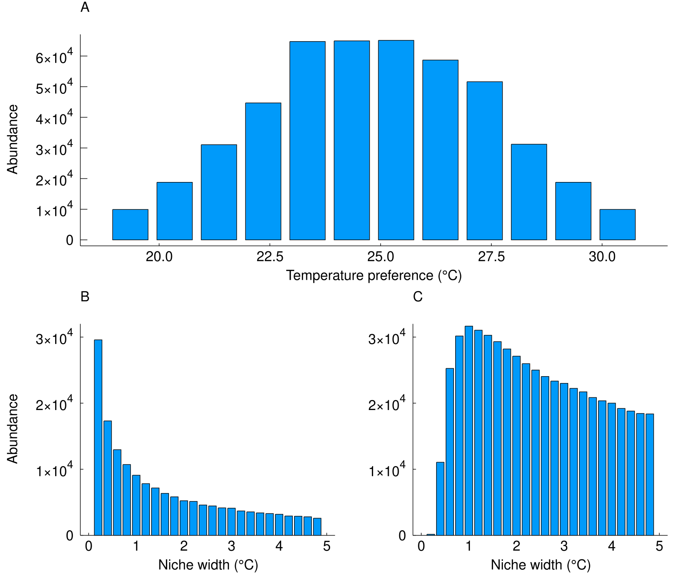
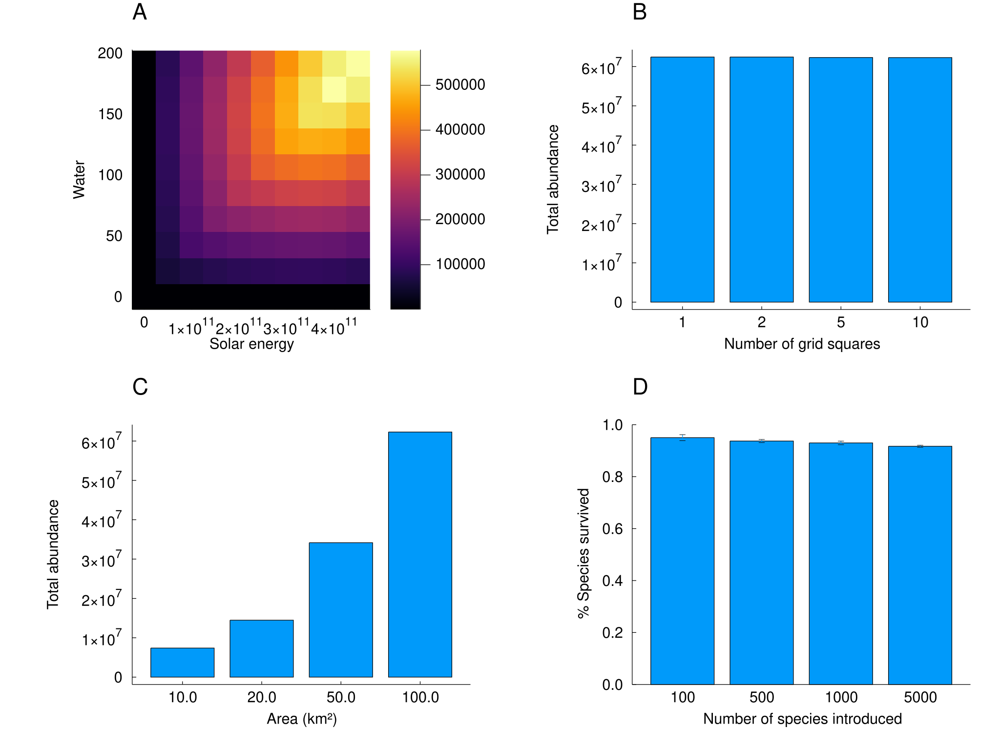
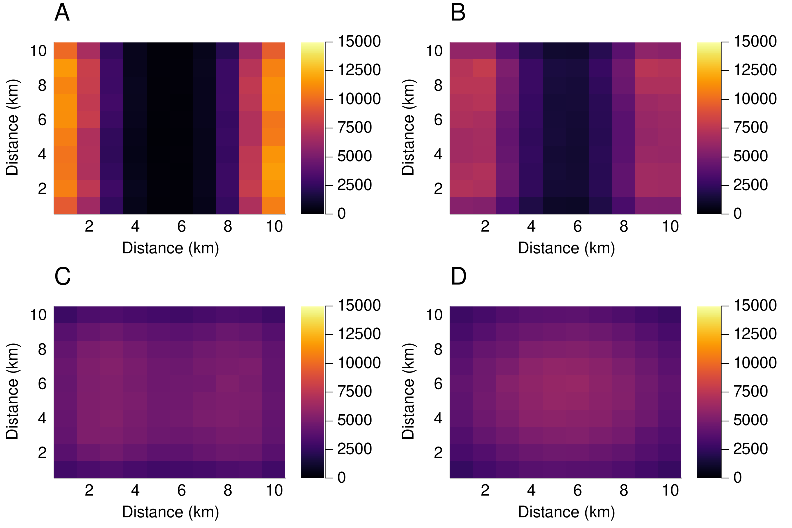

Examples
A model of this kind is worth trusting only if it reproduces things already known about ecosystems. This page works through several of them:
- species are commonest where the environment suits them;
- specialists beat generalists where conditions are constant, but not where they are not;
- more resource supports more individuals;
- total abundance depends on the area of a landscape, not on how finely it is divided into cells;
- species with longer dispersal spread further;
- large pools of species coexist.
Every result below is produced by the code shown, on a small landscape that runs in seconds. The figures come from the same experiments at full scale - hundreds of species over decades of simulated time - and those are asserted as tests in examples/biodiversity.jl.
The setup
One helper builds a uniform landscape, another puts a community on it. Both are ordinary calls to GridHabitat, build_species and build_ecosystem:
using EcoSISTEM, EcoSISTEM.Units
using Unitful, Unitful.DefaultSymbols
const SOLAR = 4.5e11kJ / (km^2 * day) # supplied per unit area, per day
const WATER = 192.0mm / day
const NEEDS = (sunlight = 450000.0kJ / day, # consumed per individual, per day
water = 192.0Unitful.L / day)
# A `cells × cells` grid over a square landscape of side `side`, uniform in every respect.
# `topology` says how the grid's edges join, and it is an **environment** keyword: whether the
# world wraps is a property of the map, not of the species dispersing over it.
function uniform_env(cells, side; temperature = 298.0K, topology = Torus())
area = StudyArea(extent = (side, side), cellsize = side / cells,
verbosity = :silent)
return GridHabitat(regime = UniformSpec(temperature,
axis = Temperature),
supply = (sunlight = UniformSpec(SOLAR,
axis = SolarRadiation),
water = UniformSpec(WATER,
axis = Precipitation)),
area = area, topology = topology)
end
# A community of `length(opts)` species, with the given temperature optima and niche widths.
function community(env, opts, widths; dispersal = 2.4km,
individuals = 10_000_000)
species = build_species(length(opts), tolerance = (opts, widths), toleranceaxis = Temperature,
demand = NEEDS, demandaxis = (sunlight = SolarRadiation, water = Precipitation), dispersal = dispersal,
birth = 0.15 / year,
death = 0.15 / year, survival = 0.1,
abundance = individuals, seed = 20260805)
return build_ecosystem(species, env; seed = 20260805)
end
# Run, and report the total abundance of each species across the whole landscape.
function run_totals(eco; times = 5year)
simulate!(eco, times, 1month_mean_duration)
return vec(sum(eco.abundances.matrix, dims = 2))
endBoth builders take a seed, which fixes one random stream per species - so every number on this page is reproducible, and independent of how many threads the simulation used.
Niche preference
Fifty species differing only in the temperature they prefer, spread either side of the landscape's own 298 K. The species matched to the environment should end up commonest:
n = 50
widths = fill(2.0K, n)
opts = 298.0K .+ widths .* range(-3, stop = 3, length = n)
abundance = run_totals(community(uniform_env(10, 10.0km), opts, widths))
(matched = sum(abundance[(opts .>= 298.0K) .& (opts .< 299.0K)]),
cold = sum(abundance[(opts .>= 292.0K) .& (opts .< 293.0K)]),
warm = sum(abundance[(opts .>= 303.0K) .& (opts .< 304.0K)]))(matched = 1359366, cold = 1322909, warm = 1068982)The species whose optimum sits on the landscape's temperature are the most abundant, and abundance falls away in both directions.
Niche width
Now every species prefers exactly the landscape's temperature, and they differ only in how broad a range they tolerate. In a landscape that never varies, a wide niche buys nothing, so the specialists should win:
widths = collect(range(0.05K, stop = 5.0K, length = n))
opts = fill(298.0K, n)
abundance = run_totals(community(uniform_env(10, 10.0km), opts, widths))
(narrowest = sum(abundance[1:10]), widest = sum(abundance[(end - 9):end]))(narrowest = 3899354, widest = 3193147)That advantage belongs to the constant landscape rather than to specialism as such. Where the environment sits away from every species' optimum, the narrowest species are excluded by the mismatch while the widest are still too diffuse, and the advantage moves to intermediate widths.

At full scale: (A) abundance against niche optimum, commonest at the environment's own temperature; (B) abundance against niche width in a matched environment, favouring specialists; (C) the same after a 1 °C shift, where intermediate widths win.
Resources
Supply is given per unit area, so a cell's resource is that rate times its area, and a species' demand is per individual. A cell supports more individuals when it is given more - here a solar supply graded from quarter strength in the west to full strength in the east:
env = uniform_env(10, 10.0km)
full = env.supply.sunlight.matrix[1, 1]
for (j, fraction) in enumerate(range(0.25, stop = 1.0, length = 10))
env.supply.sunlight.matrix[:, j] .= fraction * full
end
eco = community(env, fill(298.0K, n), fill(2.0K, n))
simulate!(eco, 5year, 1month_mean_duration)
percell = reshape(sum(eco.abundances.matrix, dims = 1), (10, 10))
(west = sum(percell[:, 1]), east = sum(percell[:, end]))(west = 1000493, east = 2161995)The two resources combine by Liebig's law of the minimum - the scarcer one sets the outcome - so grading both at once would compare cells each limited by whichever happened to be scarcer there, and would say nothing about either.
Area and grid resolution
Total abundance is a property of the landscape, not of the mesh laid over it. The same 100 km^2 divided into 1, 4, 25 or 100 cells supports the same number of individuals:
opts, widths = fill(298.0K, n), fill(2.0K, n)
map([1, 2, 5, 10]) do cells
sum(run_totals(community(uniform_env(cells, 10.0km;
topology = Island()),
opts, widths)))
end4-element Vector{Int64}:
16963395
16965458
16959519
16956584Make the landscape itself larger and it carries more resource, and so supports more individuals:
map([5.0km, 10.0km, 20.0km]) do side
sum(run_totals(community(uniform_env(10, side;
topology = Island()),
opts, widths)))
end3-element Vector{Int64}:
12722602
16956584
18498728
At full scale: (A) abundance across a landscape with graded water and solar supply; (B) abundance against landscape area; (C) abundance against grid resolution; (D) percentage of species surviving ten years.
Dispersal
Species with a longer mean dispersal distance spread further and faster. Seeding two species on opposite edges of a landscape with no wrap-around boundary, and running for fifty years, a wider kernel drains the edges and fills the middle: the edge columns fall as the kernel widens while the centre column rises.

Total abundance of two species seeded at opposite edges, after simulation, for mean dispersal distances of (A) 0.5 km, (B) 1 km, (C) 2 km and (D) 4 km.
By default a boundary redistributes rather than removes: an individual whose dispersal is aimed off the grid, or into an inactive cell, is reallocated among the destinations it can reach, so no boundary loses individuals. Pass disperse_safely = false to any of Torus, Cylinder or Island - as Torus(false) - to make those individuals die instead, which is the difference between an animal-dispersed seed, carried somewhere the animal can reach, and a wind-dispersed one blown out to sea. Because it is about dead cells rather than the map edge, it matters for a torus too, which has no edge but may still contain inactive cells.
Large species pools
Coexistence here is not an artefact of every species being identical. With randomised niche widths, optima, dispersal distances, mortality rates and body sizes, at least 90% of the pool survives - and it keeps doing so as the pool grows from 50 species to 500.